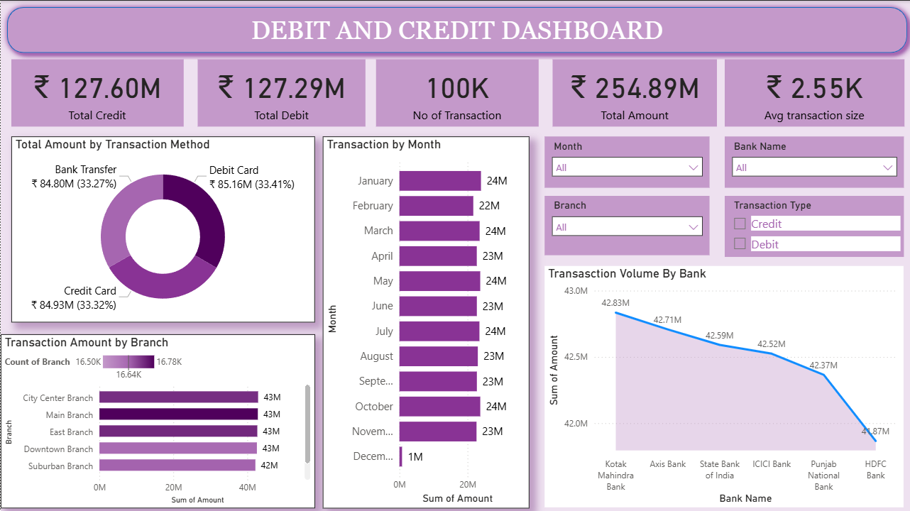

📊 Featured Projects
1. Banking Analytics Dashboard (Power BI)
• Cleaned and analyzed 50,000+ transactions
• Built KPIs: Monthly growth, anomalies, account activity ratio
• Tools: Power BI, DAX, SQL

2. Healthcare Data Analysis (Tableau)
• Patient admission trend analysis
• Identified follow-up rate and treatment KPIs
• Tools: Tableau, Excel, SQL

3. Sales Insights (Python & SQL)
• Performed EDA on retail sales
• Used Pandas, Matplotlib for trend analysis
• SQL queries for customer segmentation

📂 Skills & Tools
Languages: Python, SQL
Data Visualization: Power BI, Tableau, Matplotlib
Databases: MySQL, PostgreSQL
Others: Excel, Git, Data Cleaning & Wrangling
🔗 Connect With Me
💼 LinkedIn
📂 Tableau Public
📊 GitHub